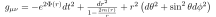
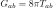

TOV equations
The Tolman-Oppenheimer-Volkoff equations are the relativistic equations for a static, spherically symmetric star (fluid ball) in hydrostatic equilibrium. The Einstein equations and hydrodynamic equations are simultaneously solved to find the solutions. The derivations of the equations often starts from an exponential form of the metric and makes a Schwarzschild like mass substitution near the end. It is as illustrative to start directly from the mass form of the metric 
The stress energy tensor is derived from the above metric and the normal stress energy tensor for a perfect
fluid
 In a static spacetime, the four velocity of the fluid follows the integral curves of the time coordinate
In a static spacetime, the four velocity of the fluid follows the integral curves of the time coordinate
 Therefore, the stress energy tensor is given in terms of the variables as
Therefore, the stress energy tensor is given in terms of the variables as

Using the metric and stress energy tensor, the Einstein equations
 can be computed. This
yields two equations
 and
and
 The mass equation is quite sensible: since the mass variable equals the Schwarzschild variable outside of the
star, the mass variable can be interpreted as the total energy inside of a given radius. Sensibly, to compute
the total energy the matter energy density must be integrated. I personally can make no intuitive sense of the
equation for the lapse variable.
The mass equation is quite sensible: since the mass variable equals the Schwarzschild variable outside of the
star, the mass variable can be interpreted as the total energy inside of a given radius. Sensibly, to compute
the total energy the matter energy density must be integrated. I personally can make no intuitive sense of the
equation for the lapse variable.